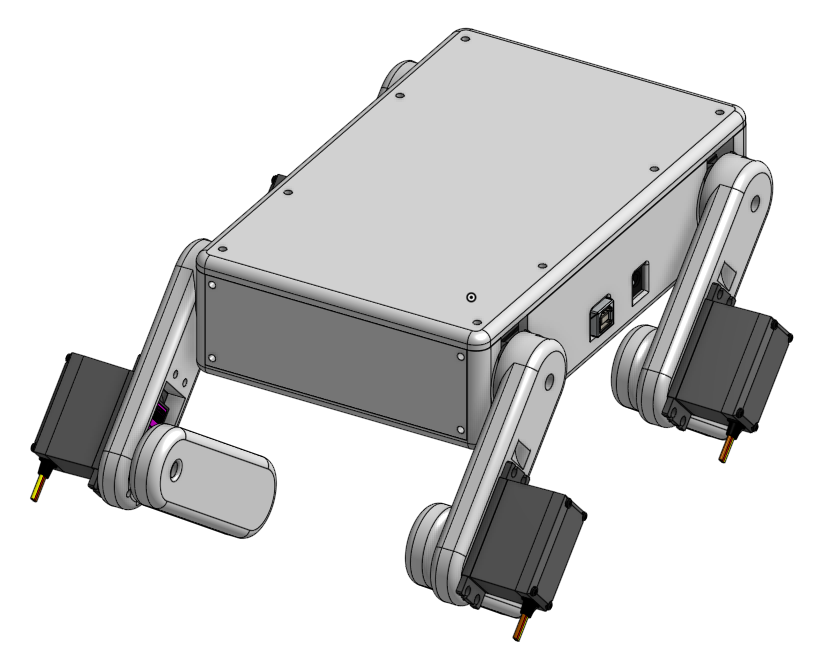
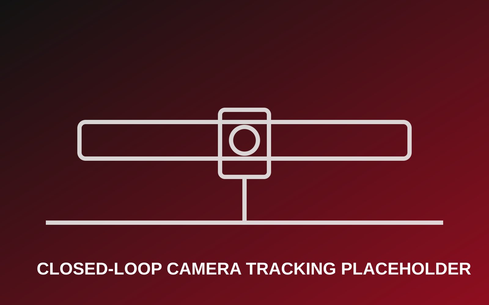
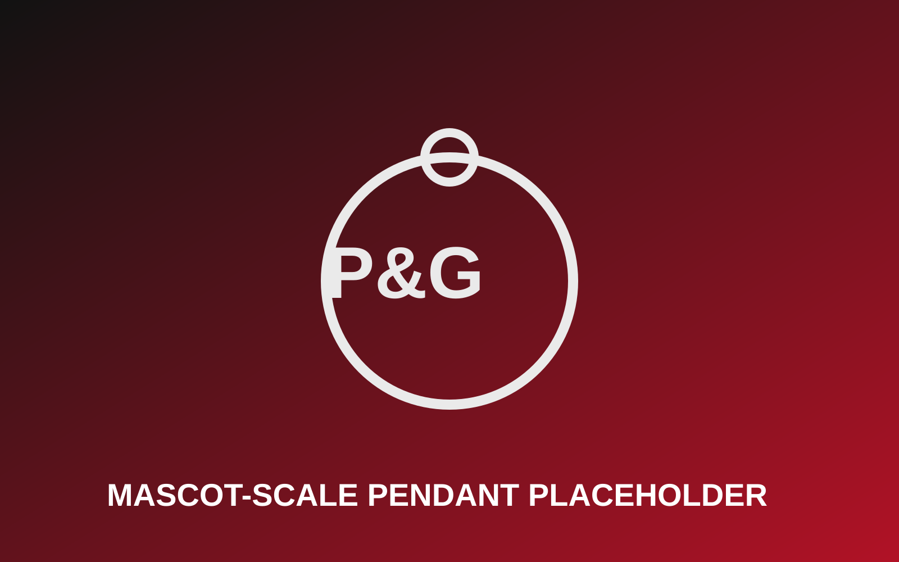

Mechanical Engineer | Product Director | Robotics & Systems Builder
I’m a mechanical engineer who designs, builds, and scales real-world engineering systems, from robotics and embedded control platforms to manufacturing workflows and classroom-ready products. My work sits at the intersection of mechanical design, controls, and hands-on prototyping, with a strong focus on turning ideas into functional, testable systems.
I've led end-to-end projects across academic, industry, and startup environments. As Product Director at Coco Academy, I oversee the development and deployment of engineering programs serving 200+ students weekly across multiple locations. I founded Pullen 3D Printing in 2019, building a custom manufacturing business that generates $3K+/month in revenue. Through my work in robotics, embedded systems, and production engineering, I've developed expertise in systems that blend hardware, software, and human interaction, and I'm especially interested in environments where rapid iteration, testing, and continuous improvement matter.
Coco Academy – Philadelphia, PA
Pullen 3D Printing – Philadelphia, PA
SEPTA – Philadelphia, PA

Designed and implemented an embedded quadruped robot control platform featuring inverse kinematics, predefined gait sequencing, and a browser-based programming interface. The system enables real-time interaction and live coding of robot behaviors, making advanced robotics concepts accessible through an intuitive, Scratch-style UI.

Developed a closed-loop automated camera tracking system using a belt-driven gantry, ROS2, and OpenCV to capture continuous high-speed motion data. The system integrates mechanical design, motor sizing, controls, and vision-based tracking to enable precise data collection over extended motion ranges.

Designed and delivered a mascot-scale 3D-printed chain and pendant for a commercial client under an accelerated sub-one-week deadline. The project required rapid CAD iteration, print strategy optimization, and coordinated post-processing to meet visual, structural, and scheduling constraints while maintaining production quality at large scale.
Students supported weekly through multi-site engineering program deployment.
Monthly revenue generated through custom prototyping and manufacturing projects.
FDM machines operated and maintained for reliable print farm production.
End-to-end delivery timeline for commercial mascot-scale production project.
Mechanical Engineering
Temple University
GPA: 3.65 • Graduated 2025
Mechanical Engineering
Temple University
GPA: 3.46 • Graduated 2024
Full technical write-up for Squeaky, including FEA durability and cost analysis.
Open Robot Dog PaperCamera Tracking System architecture, testing methods, and budget outcomes.
Open Capstone Deck